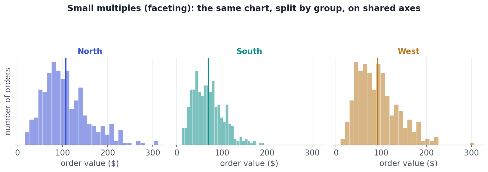
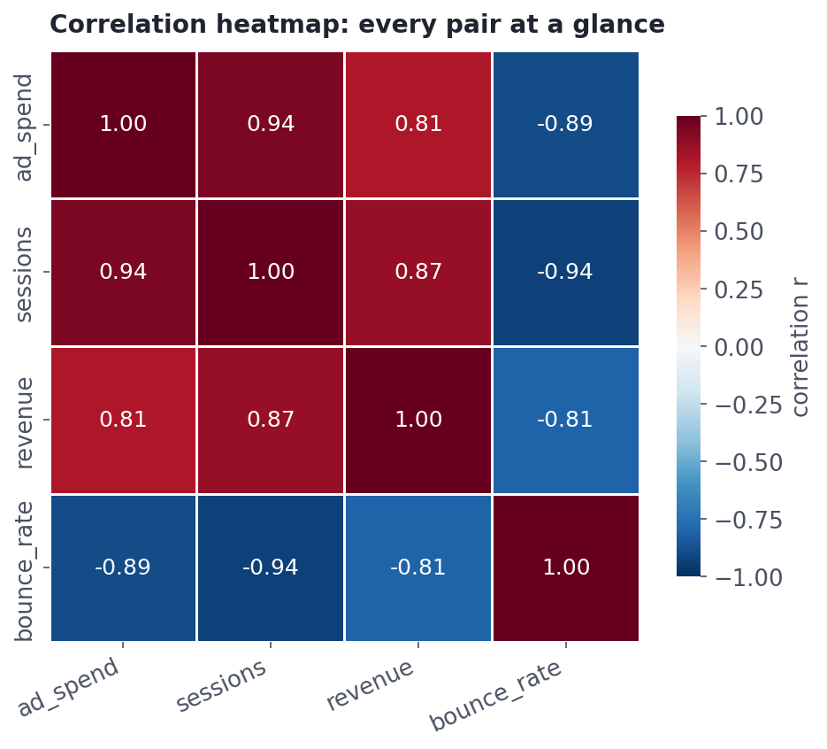
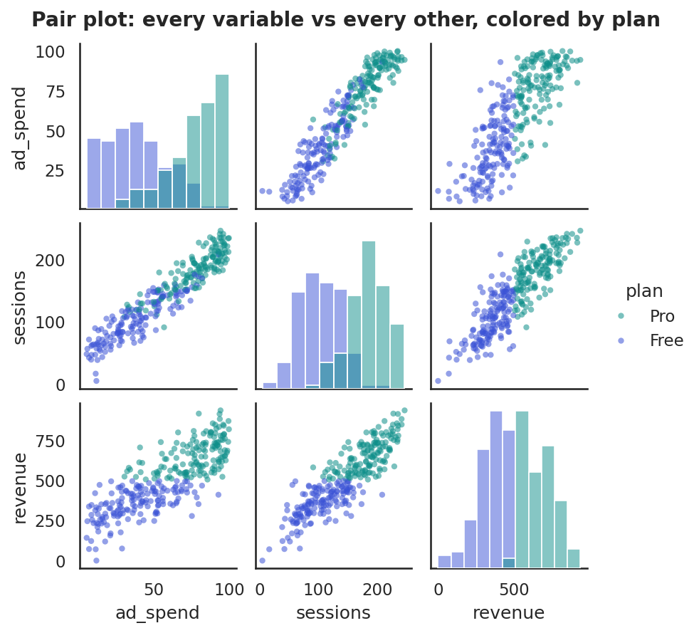

Seeing Many Variables at Once
Faceting, correlation heatmaps, and pair plots to read several variables together.
Real questions are rarely about one variable. Does the spend-vs-revenue relationship hold in every region? Which variables move together? What's driving returns? Answering these means seeing several variables at once without drowning in a tangle. This lesson gives you three high-leverage techniques — faceting, correlation heatmaps, and pair plots — that turn many dimensions into a picture you can read.
Technique 1Faceting: small multiples
Faceting (also called small multiples) means drawing the same chart repeatedly, once per group, on shared axes. Because the axes match, your eye compares the panels directly. It adds one categorical variable (the split) to whatever chart you were already using — a histogram per region, a trend line per product, a scatter per segment.

Technique 2The correlation heatmap
When you have several numeric variables, you want every pairwise correlation (Lesson 4.10) at once. A heatmap of the correlation matrix does exactly that: each cell is a pair, colored by the strength and sign of their relationship. A diverging color scale (red–blue) makes positive and negative pop, and clusters of related variables jump out.

A heatmap inherits all of correlation's caveats: it measures only linear, pairwise relationships, so it misses curves (a U-shape reads as ~0, Lesson 4.10) and says nothing about causation. Use it to spot candidates worth a closer scatter plot — not as the final word.
Technique 3Pair plots (the scatter matrix)
A pair plot goes one level deeper than the heatmap: instead of a single number per pair, it draws the actual scatter plot for every pair of numeric variables, with each variable's distribution down the diagonal. Color the points by a category and you've added a fifth variable. It's the fastest way to see the shape of every relationship at once — and to catch the non-linearities a heatmap hides.

Worked exampleThe numbers behind the heatmap
A heatmap is just a picture of the correlation matrix, which is one line of pandas. Compute it, and you can both read the numbers and feed them to a heatmap to visualize.
import pandas as pd, numpy as np
rng = np.random.default_rng(4)
n = 200
ad_spend = rng.uniform(5, 100, n)
sessions = 40 + 1.8*ad_spend + rng.normal(0, 18, n)
revenue = 80 + 3.0*sessions + rng.normal(0, 90, n)
bounce = 70 - 0.4*sessions + rng.normal(0, 8, n)
df = pd.DataFrame({"ad_spend": ad_spend, "sessions": sessions,
"revenue": revenue, "bounce_rate": bounce})
# The correlation matrix — the numbers a heatmap colors in:
print(df.corr().round(2).to_string())
# To visualize it: import seaborn as sns; sns.heatmap(df.corr(), annot=True, cmap="RdBu_r")ad_spend sessions revenue bounce_rate ad_spend 1.00 0.94 0.82 -0.89 sessions 0.94 1.00 0.87 -0.93 revenue 0.82 0.87 1.00 -0.80 bounce_rate -0.89 -0.93 -0.80 1.00
To add a third variable to a single scatter plot, you can map it to color or point size (a 'bubble chart') — but use this sparingly: from Lesson 5.2, people read position and length far better than color or area. Often two clear charts, or a faceted set, beat one overloaded chart trying to show four variables at once.
★ Key points to remember
- Faceting / small multiples: the same chart per group on shared axes — the eye compares panels directly.
- Correlation heatmap: every pairwise correlation at once; diverging colors show sign and strength.
- Heatmaps are linear and pairwise only — they miss curves and never imply causation; use them to find scatters worth drawing.
- Pair plot: the actual scatter for every pair, distributions on the diagonal, color for a category — see all relationships at once.
- Encode a 3rd variable with color/size only sparingly; clear small multiples often beat one overloaded chart.
◆ Practice▸
Show solution & reasoning
Compute the correlation matrix (df.corr()) and draw a heatmap to scan all 66 pairs at once, looking for strong red/blue cells and clusters. Follow-up: for any strong (or surprising) pair, draw the scatter plot to confirm the relationship is real and roughly linear (not driven by an outlier or actually curved), since the heatmap only captures linear, pairwise association.
Show solution & reasoning
Facet the analysis by tier — e.g., a scatter of discount vs spend per tier on shared axes, or compute the correlation within each tier. You're guarding against Simpson's paradox: a relationship that holds in aggregate can weaken, vanish, or even reverse within subgroups (a confounding effect). Small multiples make such reversals visible, which a single pooled number would hide.
◎ Deep dive: Simpson's paradox, and seeing beyond a handful of variables (PCA, clustering)▸
Simpson's paradox — why aggregated views can lie. A trend visible in combined data can reverse inside every subgroup. The classic case: a treatment that looks worse overall but is better for both mild and severe patients, because severity (a confounder) is distributed unevenly. Faceting and grouped analysis are your defense — always ask whether a confounding variable (Lesson 4.10, and all of Track 7) might be hiding inside an aggregate. This is one of the most important reasons to look at subgroups, not just totals.
When there are too many variables to eyeball. A pair plot of 5 variables is 25 panels; of 20 variables it's 400 — unreadable. Beyond a handful of dimensions you reach for dimensionality reduction: techniques like PCA (principal component analysis) compress many correlated variables into a few summary axes that capture most of the variation, which you can then plot in 2-D. It's a preview of unsupervised learning (Track 8); for now, know that heatmaps and pair plots are your tools up to ~10 variables, and reduction takes over above that.
Clustering a heatmap. With many variables, reordering the heatmap's rows and columns so that similar variables sit together (a 'clustered heatmap') turns a wall of numbers into visible blocks of related variables — a fast way to discover structure, and a staple of exploratory work in fields from genomics to finance.
Expect "how would you explore relationships among many variables?" Name the trio: faceting for group comparisons, a correlation heatmap to scan all pairs, and a pair plot to see the actual shapes — then add the caveats (heatmaps are linear/pairwise; watch for Simpson's paradox; use PCA when there are too many variables). That breadth-plus-caution is what interviewers want.